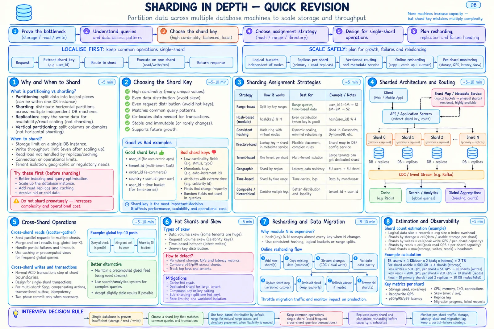

Topic · Sharding in Depth
When and Why to Shard
Sharding is not a default checkbox. Prove the bottleneck, know what it fixes and what it doesn't, then size it with real math.


Quick Revision
- Shard only after proving the bottleneck: storage, writes, reads, connections, maintenance, isolation, or residency.
- The shard key is the most consequential decision.
- Hash is the default; range keeps order; directory buys flexibility with a metadata dependency.
- Keep common operations single-shard.
- Balanced rows ≠ balanced traffic.
- Plan resharding early: logical buckets, not
hash % N. - Sharding scales capacity, not availability - replicate every shard.
Mental model
- Shard key - field(s) used to group and route records.
- Logical bucket - stable assignment unit, independent of machine count.
- Physical shard / shard group - DB instance owning buckets; primary + replicas + backups + failover state.
- Shard map - versioned
bucket → shard group. - Co-location - related records on one shard so reads and transactions stay local.
- Scatter-gather - one query fanned to many shards and merged.
- Improves - storage, write and read throughput, maintenance blast radius, tenant/region isolation.
- Doesn't improve - availability, query correctness, hot-key performance, operational simplicity.
| Technique | Does | Goal | Caveat |
|---|---|---|---|
| Table partitioning | Splits rows inside one DB | Pruning, lifecycle | Machine is still the limit |
| Horizontal sharding | Splits rows across machines | Storage + throughput | Routing, cross-shard work |
| Vertical partitioning | Splits columns or domains | Ownership, isolation | Joins cross databases |
| Replication | Copies the same data | Availability, read scale | Replica lag |
When to shard
| Limit | Try first | Why sharding helps |
|---|---|---|
| Storage | Archival, compression, cold storage, bigger instance | Divides the dataset |
| Write throughput | Batching, index/schema tuning, queueing, hardware | Parallel independent writes |
| Read throughput | Indexes, cache, replicas, read models | Spreads point reads |
| Connections / memory | Pooling, proxy, fewer chatty queries | Divides pools and working sets |
| Noisy tenants | Resource groups | Dedicated tenant shards |
| Data residency | Regional replicas if legal | Geographic placement |
Don't shard yet if an index fixes it, replicas/cache cover reads, data fits for the foreseeable horizon, query patterns are unclear, or the team can't run migrations, maps, and per-shard backups.
Estimation
shards_by_storage = ceil(data ÷ (raw capacity × 60-75% utilisation)) shards_by_writes = ceil(peak writes × skew ÷ safe writes per primary) shards_by_reads = ceil(peak reads × skew ÷ safe reads per shard group) primary_shards = max(...) × growth headroom total_nodes = primary_shards × (1 + replicas) fan-out load = global QPS × shards (2K QPS × 40 shards = 80K queries/s) migration time = bytes ÷ throttled copy rate + CDC catch-up + validation + canary
Social platform (illustrative): storage 40 TB ÷ 2.5 TB = 16 writes 120K × 1.5 ÷ 8K = 23 reads 900K × 1.5 ÷ (2 × 20K) = 34 headroom 34 × 1.2 = 41 → choose 48 primaries → 144 nodes with 2 replicas buckets 4096 ÷ 48 ≈ 85 per primary move 2 TB @ 150 MB/s ≈ 3.7 h copy (plan ~1 day end to end)
- Storage dominates - add shards or archive.
- Writes dominate - hash key + single-shard transactions.
- Reads dominate - cache/replicas may defer sharding.
- Skew dominates - more shards won't help; isolate the hot owner.
- Fan-out dominates - build a global read model.
Trade-offs
| Choice | Benefit | Cost / risk |
|---|---|---|
| Vertical scaling | Simple joins and transactions | Hard ceiling, cost, big blast radius |
| Read replicas | Read scale, little model change | No write/storage scale; lag |
| Table partitioning | Pruning, lifecycle in one DB | Machine bottleneck remains |
| Managed sharding | Less infrastructure work | Platform semantics; bad keys still hurt |
Failure modes
- Premature sharding - start simple; define thresholds and a split plan.
- Managed DB assumed to remove design - still model keys, hot keys, queries, consistency.
- Cluster averages hide saturation - alerts per shard, tenant, and hot key.
Interview practice
Answer aloud, then reveal.
Flexport SDE-1 (2025): sharding vs partitioning; how would you choose the key for your system?
Partitioning splits data; sharding puts horizontal partitions on separate machines; replication copies. Pick the key from dominant reads/writes and transaction boundaries, verify cardinality, balance, immutability, hot entities, growth. Name a rejected key and state the resharding plan.
Why not shard immediately?
Indexes, vertical scaling, cache, replicas, archival, and query changes usually go much further. Premature sharding is a permanent dev and ops tax.
How do you choose the initial shard count?
Estimate storage, write, and read limits; take the max; add growth and failure headroom. Use far more logical buckets than physical shards.
When should you choose a managed distributed database?
When its partitioning, consistency, and ops model fit the workload. It doesn't remove shard-key, locality, hot-key, or cost analysis.
When should you not shard?
One tuned database meets the horizon, query patterns are unsettled, or the team can't safely run migrations, routing, and backups.